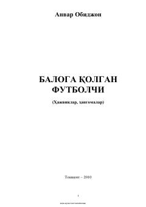

BQAnvar Obidjonning o'tkir hajviyalari va qiziqarli hangomalari to'plami.
O'zbekiston xalq shoiri Anvar Obidjonning ushbu to'plamiga kiritilgan hajviya va hangomalari oddiy kishilar turmushiga yaqinligi, mazmuni teranligi bilan ajralib turadi. Asarlar ijtimoiy illatlar va turmushdagi kulgili holatlarni o'tkir satira ostida ochib beradi.